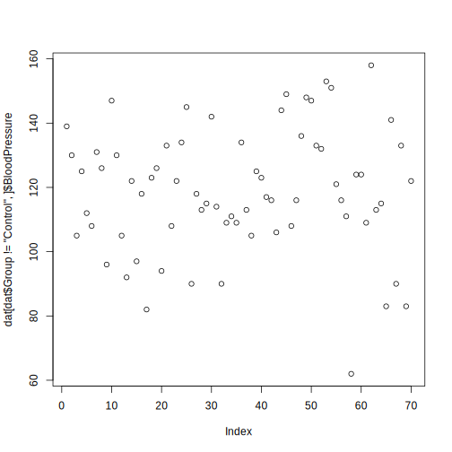

Addressing Data
Last updated on 2025-10-07 | Edit this page
Overview
Questions
- What are the different methods for accessing parts of a data frame?
Objectives
- Understand the three different ways R can address data inside a data frame.
- Combine different methods for addressing data with the assignment operator to update subsets of data.
R is a powerful language for data manipulation. There are three main ways for addressing data inside R objects.
- By index (subsetting)
- By logical vector
- By name
Lets start by loading some sample data:
R
dat <- read.csv(file = 'data/sample.csv', header = TRUE, stringsAsFactors = FALSE)
Interpreting Rows as Headers
The first row of this csv file is a list of column names. We used the
header = TRUE argument to read.csv so that R can
interpret the file correctly. We are using the stringsAsFactors =
FALSE argument to override the default behaviour for R. Using
factors in R is covered in a separate lesson.
Lets take a look at this data.
R
class(dat)
OUTPUT
[1] "data.frame"R has loaded the contents of the .csv file into a variable called
dat which is a data frame.
We can compactly display the internal structure of a data frame using
the structure function str.
R
str(dat)
OUTPUT
'data.frame': 100 obs. of 9 variables:
$ ID : chr "Sub001" "Sub002" "Sub003" "Sub004" ...
$ Gender : chr "m" "m" "m" "f" ...
$ Group : chr "Control" "Treatment2" "Treatment2" "Treatment1" ...
$ BloodPressure: int 132 139 130 105 125 112 173 108 131 129 ...
$ Age : num 16 17.2 19.5 15.7 19.9 14.3 17.7 19.8 19.4 18.8 ...
$ Aneurisms_q1 : int 114 148 196 199 188 260 135 216 117 188 ...
$ Aneurisms_q2 : int 140 209 251 140 120 266 98 238 215 144 ...
$ Aneurisms_q3 : int 202 248 122 233 222 320 154 279 181 192 ...
$ Aneurisms_q4 : int 237 248 177 220 228 294 245 251 272 185 ...The str function tell us that the data has 100 rows and
9 columns. It is also tell us that the data frame is made up of
character chr, integer int and
numeric vectors.
R
head(dat)
OUTPUT
ID Gender Group BloodPressure Age Aneurisms_q1 Aneurisms_q2
1 Sub001 m Control 132 16.0 114 140
2 Sub002 m Treatment2 139 17.2 148 209
3 Sub003 m Treatment2 130 19.5 196 251
4 Sub004 f Treatment1 105 15.7 199 140
5 Sub005 m Treatment1 125 19.9 188 120
6 Sub006 M Treatment2 112 14.3 260 266
Aneurisms_q3 Aneurisms_q4
1 202 237
2 248 248
3 122 177
4 233 220
5 222 228
6 320 294The data is the results of an (not real) experiment, looking at the number of aneurysms that formed in the eyes of patients who undertook 3 different treatments.
Addressing by Index
Data can be accessed by index. We have already seen how square
brackets [ can be used to subset data (sometimes also
called “slicing”). The generic format is
dat[row_numbers,column_numbers].
Selecting Values
What will be returned by dat[1, 1]? Think about the
number of rows and columns you would expect as the result.
R
dat[1, 1]
OUTPUT
[1] "Sub001"If we leave out a dimension R will interpret this as a request for all values in that dimension.
Selecting More Values
What will be returned by dat[, 2]?
R
dat[, 2]
OUTPUT
[1] "m" "m" "m" "f" "m" "M" "f" "m" "m" "f" "m" "f" "f" "m" "m" "m" "f" "m"
[19] "m" "F" "f" "m" "f" "f" "m" "M" "M" "f" "m" "f" "f" "m" "m" "m" "m" "f"
[37] "f" "m" "M" "m" "f" "m" "m" "m" "f" "f" "M" "M" "m" "m" "m" "f" "f" "f"
[55] "m" "f" "m" "m" "m" "f" "f" "f" "f" "M" "f" "m" "f" "f" "M" "m" "m" "m"
[73] "F" "m" "m" "f" "M" "M" "M" "f" "m" "M" "M" "m" "m" "f" "f" "f" "m" "m"
[91] "f" "m" "F" "f" "m" "m" "F" "m" "M" "M"The colon : can be used to create a sequence of
integers.
R
6:9
OUTPUT
[1] 6 7 8 9Creates a vector of numbers from 6 to 9.
This can be very useful for addressing data.
Subsetting with Sequences
Use the colon operator to index just the aneurism count data (columns 6 to 9).
R
dat[, 6:9]
OUTPUT
Aneurisms_q1 Aneurisms_q2 Aneurisms_q3 Aneurisms_q4
1 114 140 202 237
2 148 209 248 248
3 196 251 122 177
4 199 140 233 220
5 188 120 222 228
6 260 266 320 294
7 135 98 154 245
8 216 238 279 251
9 117 215 181 272
10 188 144 192 185
11 134 155 247 223
12 152 177 323 245
13 112 220 225 195
14 109 150 177 189
15 146 140 239 223
16 97 172 203 207
17 165 157 200 193
18 158 265 243 187
19 178 109 206 182
20 107 188 167 218
21 174 160 203 183
22 97 110 194 133
23 187 239 281 214
24 188 191 256 265
25 114 199 242 195
26 115 160 158 228
27 128 249 294 315
28 112 230 281 126
29 136 109 105 155
30 103 148 219 228
31 132 151 234 162
32 118 154 260 160
33 166 176 253 233
34 152 105 197 299
35 191 148 166 185
36 152 178 158 170
37 161 270 232 284
38 239 184 317 269
39 132 137 193 206
40 168 255 273 274
41 140 184 239 202
42 166 85 179 196
43 141 160 179 239
44 161 168 212 181
45 103 111 254 126
46 231 240 260 310
47 192 141 180 225
48 178 180 169 183
49 167 123 236 224
50 135 150 208 279
51 150 166 153 204
52 192 80 138 222
53 153 153 236 216
54 205 264 269 207
55 117 194 216 211
56 199 119 183 251
57 182 129 226 218
58 180 196 250 294
59 111 111 244 201
60 101 98 178 116
61 166 167 232 241
62 158 171 237 212
63 189 178 177 238
64 189 101 193 172
65 239 189 297 300
66 185 224 151 182
67 224 112 304 288
68 104 139 211 204
69 222 199 280 196
70 107 98 204 138
71 153 255 218 234
72 118 165 220 227
73 102 184 246 222
74 188 125 191 157
75 180 283 204 298
76 178 214 291 240
77 168 184 184 229
78 118 170 249 249
79 169 114 248 233
80 156 138 218 258
81 232 211 219 246
82 188 108 180 136
83 169 168 180 211
84 241 233 292 182
85 65 207 234 235
86 225 185 195 235
87 104 116 173 221
88 179 158 216 244
89 103 140 209 186
90 112 130 175 191
91 226 170 307 244
92 228 221 316 259
93 209 142 199 184
94 153 104 194 214
95 111 118 173 191
96 148 132 200 194
97 141 196 322 273
98 193 112 123 181
99 130 226 286 281
100 126 157 129 160Finally we can use the c() (combine) function to address
non-sequential rows and columns.
R
dat[c(1, 5, 7, 9), 1:5]
OUTPUT
ID Gender Group BloodPressure Age
1 Sub001 m Control 132 16.0
5 Sub005 m Treatment1 125 19.9
7 Sub007 f Control 173 17.7
9 Sub009 m Treatment2 131 19.4Returns the first 5 columns for patients in rows 1,5,7 and 9
Subsetting Non-Sequential Data
Write code to return the age and gender values for the first 5 patients.
R
dat[1:5, c(5, 2)]
OUTPUT
Age Gender
1 16.0 m
2 17.2 m
3 19.5 m
4 15.7 f
5 19.9 mAddressing by Name
Columns in an R data frame are named.
R
colnames(dat)
OUTPUT
[1] "ID" "Gender" "Group" "BloodPressure"
[5] "Age" "Aneurisms_q1" "Aneurisms_q2" "Aneurisms_q3"
[9] "Aneurisms_q4" Default Names
If column names are not specified e.g. using
header = FALSE in a read.csv() function, R
assigns default names V1, V2, ..., Vn
We usually use the $ operator to address a column by
name
R
dat$Gender
OUTPUT
[1] "m" "m" "m" "f" "m" "M" "f" "m" "m" "f" "m" "f" "f" "m" "m" "m" "f" "m"
[19] "m" "F" "f" "m" "f" "f" "m" "M" "M" "f" "m" "f" "f" "m" "m" "m" "m" "f"
[37] "f" "m" "M" "m" "f" "m" "m" "m" "f" "f" "M" "M" "m" "m" "m" "f" "f" "f"
[55] "m" "f" "m" "m" "m" "f" "f" "f" "f" "M" "f" "m" "f" "f" "M" "m" "m" "m"
[73] "F" "m" "m" "f" "M" "M" "M" "f" "m" "M" "M" "m" "m" "f" "f" "f" "m" "m"
[91] "f" "m" "F" "f" "m" "m" "F" "m" "M" "M"When we extract a single column from a data frame using the
$ operator, R will return a vector of that column class and
not a data frame.
R
class(dat$Gender)
OUTPUT
[1] "character"R
class(dat$BloodPressure)
OUTPUT
[1] "integer"Named addressing can also be used in square brackets.
R
head(dat[, c('Age', 'Gender')])
OUTPUT
Age Gender
1 16.0 m
2 17.2 m
3 19.5 m
4 15.7 f
5 19.9 m
6 14.3 MBest Practice
Best practice is to address columns by name. Often, you will create or delete columns and the column position will change.
Rows in an R data frame can also be named, and rows can also be
addressed by their names.
By default, row names are indices
(i.e. position of each row in the data frame):
R
rownames(dat)
OUTPUT
[1] "1" "2" "3" "4" "5" "6" "7" "8" "9" "10" "11" "12"
[13] "13" "14" "15" "16" "17" "18" "19" "20" "21" "22" "23" "24"
[25] "25" "26" "27" "28" "29" "30" "31" "32" "33" "34" "35" "36"
[37] "37" "38" "39" "40" "41" "42" "43" "44" "45" "46" "47" "48"
[49] "49" "50" "51" "52" "53" "54" "55" "56" "57" "58" "59" "60"
[61] "61" "62" "63" "64" "65" "66" "67" "68" "69" "70" "71" "72"
[73] "73" "74" "75" "76" "77" "78" "79" "80" "81" "82" "83" "84"
[85] "85" "86" "87" "88" "89" "90" "91" "92" "93" "94" "95" "96"
[97] "97" "98" "99" "100"We can add row names as we read in the file with the
row.names parameter in read.csv.
In the following example, we choose the first column ID to
become the vector of row names of the data frame, with
row.names = 1.
R
dat2 <- read.csv(file = 'data/sample.csv', header = TRUE, stringsAsFactors = FALSE, row.names=1)
rownames(dat2)
OUTPUT
[1] "Sub001" "Sub002" "Sub003" "Sub004" "Sub005" "Sub006" "Sub007" "Sub008"
[9] "Sub009" "Sub010" "Sub011" "Sub012" "Sub013" "Sub014" "Sub015" "Sub016"
[17] "Sub017" "Sub018" "Sub019" "Sub020" "Sub021" "Sub022" "Sub023" "Sub024"
[25] "Sub025" "Sub026" "Sub027" "Sub028" "Sub029" "Sub030" "Sub031" "Sub032"
[33] "Sub033" "Sub034" "Sub035" "Sub036" "Sub037" "Sub038" "Sub039" "Sub040"
[41] "Sub041" "Sub042" "Sub043" "Sub044" "Sub045" "Sub046" "Sub047" "Sub048"
[49] "Sub049" "Sub050" "Sub051" "Sub052" "Sub053" "Sub054" "Sub055" "Sub056"
[57] "Sub057" "Sub058" "Sub059" "Sub060" "Sub061" "Sub062" "Sub063" "Sub064"
[65] "Sub065" "Sub066" "Sub067" "Sub068" "Sub069" "Sub070" "Sub071" "Sub072"
[73] "Sub073" "Sub074" "Sub075" "Sub076" "Sub077" "Sub078" "Sub079" "Sub080"
[81] "Sub081" "Sub082" "Sub083" "Sub084" "Sub085" "Sub086" "Sub087" "Sub088"
[89] "Sub089" "Sub090" "Sub091" "Sub092" "Sub093" "Sub094" "Sub095" "Sub096"
[97] "Sub097" "Sub098" "Sub099" "Sub100"We can now extract one or more rows using those row names:
R
dat2["Sub072", ]
OUTPUT
Gender Group BloodPressure Age Aneurisms_q1 Aneurisms_q2 Aneurisms_q3
Sub072 m Control 116 17.4 118 165 220
Aneurisms_q4
Sub072 227R
dat2[c("Sub009", "Sub072"), ]
OUTPUT
Gender Group BloodPressure Age Aneurisms_q1 Aneurisms_q2
Sub009 m Treatment2 131 19.4 117 215
Sub072 m Control 116 17.4 118 165
Aneurisms_q3 Aneurisms_q4
Sub009 181 272
Sub072 220 227Note that row names must be unique!
For example, if we try and read in the data setting the Group column as row names, R will throw an error because values in that column are duplicated:
R
dat2 <- read.csv(file = 'data/sample.csv', header = TRUE, stringsAsFactors = FALSE, row.names=3)
ERROR
Error in read.table(file = file, header = header, sep = sep, quote = quote, : duplicate 'row.names' are not allowedAddressing by Logical Vector
A logical vector contains only the special values TRUE
and FALSE.
R
c(TRUE, TRUE, FALSE, FALSE, TRUE)
OUTPUT
[1] TRUE TRUE FALSE FALSE TRUETruth and Its Opposite
Note the values TRUE and FALSE are all
capital letters and are not quoted.
Logical vectors can be created using
relational operators
e.g. <, >, ==, !=, %in%.
R
x <- c(1, 2, 3, 11, 12, 13)
x < 10
OUTPUT
[1] TRUE TRUE TRUE FALSE FALSE FALSER
x %in% 1:10
OUTPUT
[1] TRUE TRUE TRUE FALSE FALSE FALSEWe can use logical vectors to select data from a data frame. This is often referred to as logical indexing.
R
index <- dat$Group == 'Control'
dat[index,]$BloodPressure
OUTPUT
[1] 132 173 129 77 158 81 137 111 135 108 133 139 126 125 99 122 155 133 94
[20] 98 74 116 97 104 117 90 150 116 108 102Often this operation is written as one line of code:
R
plot(dat[dat$Group == 'Control', ]$BloodPressure)
Using Logical Indexes
- Create a scatterplot showing BloodPressure for subjects not in the control group.
- How many ways are there to index this set of subjects?
- The code for such a plot:
R
plot(dat[dat$Group != 'Control', ]$BloodPressure)

2. In addition to dat$Group != 'Control', one could use
dat$Group %in% c("Treatment1", "Treatment2").
Combining Addressing and Assignment
The assignment operator <- can be combined with
addressing.
R
x <- c(1, 2, 3, 11, 12, 13)
x[x < 10] <- 0
x
OUTPUT
[1] 0 0 0 11 12 13Updating a Subset of Values
In this dataset, values for Gender have been recorded as both
uppercase M, F and lowercase m, f. Combine the
addressing and assignment operations to convert all values to
lowercase.
R
dat[dat$Gender == 'M', ]$Gender <- 'm'
dat[dat$Gender == 'F', ]$Gender <- 'f'
- Data in data frames can be addressed by index (subsetting), by logical vector, or by name (columns only).
- Use the
$operator to address a column by name.